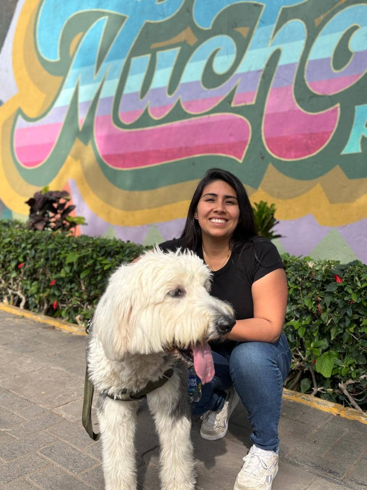

Vanessa Marcos
About Me

My name is Vanessa Marcos, and I'm from Lima, Peru. I love being a mom. I have a little daughter, and I love spending time with her. I also love cooking, playing music, and spending time with my family.
Peru
Peru is my home country. It is known for its rich history, beautiful landscapes, diverse culture, and delicious food. It is located in South America and is famous for Machu Picchu, the Amazon rainforest, and the Andes Mountains.